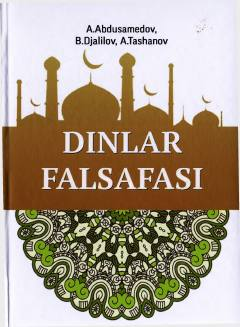

DFDinlarning falsafiy mohiyati va tarixiy shakllanish jarayonlarini o'rganishga bag'ishlangan o'quv qo'llanma.
Mazkur o'quv qo'llanma dinning falsafiy mohiyati, ibtidoiy, milliy va jahon dinlari ta’limotining shakllanish jarayonlarini yoritib beradi. Kitobda dinlar falsafasining asosiy tushunchalari, diniy-falsafiy oqimlar hamda ularning ta’limotlari nazariy jihatdan tahlil qilingan. O'quv-uslubiy majmua oliy o'quv yurtlari talabalari va tadqiqotchilar uchun mo'ljallangan.